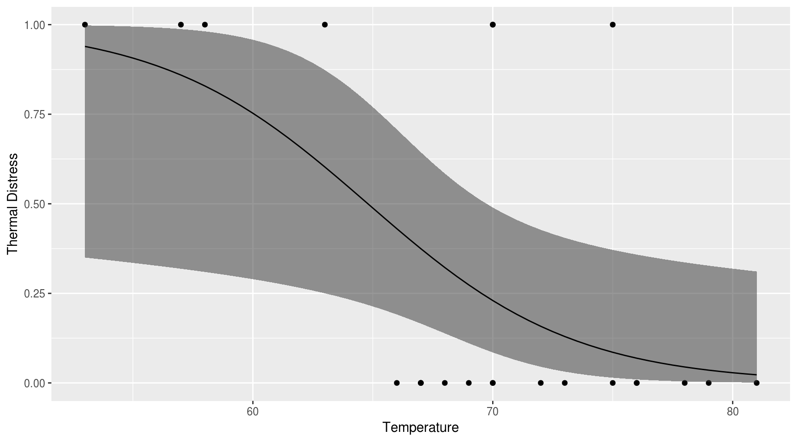
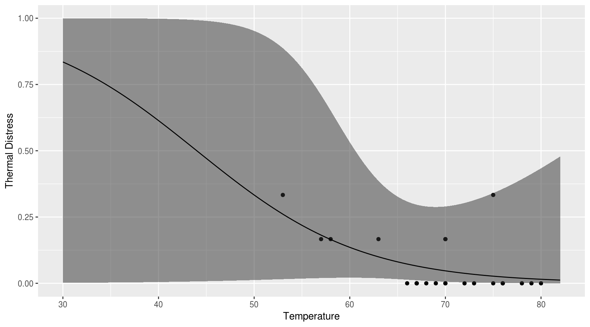
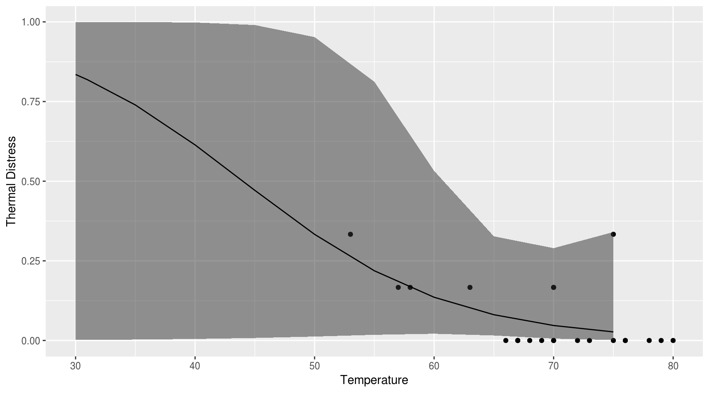

Carregamento de pacotes:
# dplyr -- para facilitar manipulacao de dados
if (!require('dplyr')) install.packages('dplyr'); library('dplyr')
# magrittr -- para facilitar manipulacao de dados
if (!require('magrittr')) install.packages('magrittr'); library('magrittr')
# tibble -- para facilitar manipulacao de dados
if (!require('tibble')) install.packages('tibble'); library('tibble')
# plotly -- para os plots
if (!require('plotly')) install.packages('plotly'); library('plotly')
# lmtest -- para os testes de razao de verossimilhancas e para o teste de wald
if (!require('lmtest')) install.packages('plotly'); library('lmtest')
# list.of.packages <- c("dplyr", "magrittr", "plotly", "mclust")
# new.packages <- list.of.packages[!(list.of.packages %in% installed.packages()[,"Package"])]
# if(length(new.packages)) install.packages(new.packages); sapply(list.of.packages, library, character.only=TRUE)Carregamento dos dados:
falhas <- c(2, 0, 0, 1, 0, 0, 1, 0, 0, 1, 2, 0, 1, 0, 0, 0, 0, 0, 1, 0, 0, 0, 0)
temp <- c(53, 66, 68, 70, 75, 78, 57, 67, 69, 70, 75, 79, 58, 67, 70, 72, 76, 80, 63, 67, 70, 73, 76)
challenger <- tibble::data_frame(falhas, temp)
challengerPlot:
challenger %>%
#dplyr::mutate(color = factor(falhas)) %>%
plotly::plot_ly(x=~temp, y=~falhas, #group=~color,
type="scatter", mode="markers", #color=~color,
split=~falhas) %>%
plotly::layout(title = "Análises do Space Shuttle Data")Dados:
# removendo os zeros
challenger2 <- challenger %>%
dplyr::filter(falhas != 0)
challenger2Plot:
challenger2 %>%
#dplyr::mutate(color = factor(falhas)) %>%
plotly::plot_ly(x=~temp, y=~falhas, #group=~color,
type="scatter", mode="markers", #color=~color,
split=~falhas) %>%
plotly::layout(title = "Análises do Space Shuttle Data\nAnálise Incorreta 1\nDados SEM zeros")Regressão Linear SEM zeros:
orings = 6
challenger2 <- challenger2 %>%
dplyr::mutate(resp = falhas/orings)
# sum of squares
aov(resp ~ temp, data = challenger2)## Call:
## aov(formula = resp ~ temp, data = challenger2)
##
## Terms:
## temp Residuals
## Sum of Squares 0.00002271 0.03965983
## Deg. of Freedom 1 5
##
## Residual standard error: 0.08906159
## Estimated effects may be unbalanced# regressao
fit1 <- lm(resp ~ temp, data = challenger2)
summary(fit1)##
## Call:
## lm(formula = resp ~ temp, data = challenger2)
##
## Residuals:
## 1 2 3 4 5 6 7
## 0.12160 -0.04912 -0.04602 -0.04912 0.11636 -0.04626 -0.04745
##
## Coefficients:
## Estimate Std. Error t value Pr(>|t|)
## (Intercept) 0.1990939 0.2859162 0.696 0.517
## temp 0.0002384 0.0044563 0.054 0.959
##
## Residual standard error: 0.08906 on 5 degrees of freedom
## Multiple R-squared: 0.0005722, Adjusted R-squared: -0.1993
## F-statistic: 0.002863 on 1 and 5 DF, p-value: 0.9594Plot:
challenger2 %>%
plotly::plot_ly(x = ~temp) %>%
plotly::add_markers(y = ~resp, name = "resp") %>%
plotly::add_lines(x = ~temp, y = fitted(fit1), name = "fit") %>%
plotly::layout(title = "NASA Space Shuttle O-Ring Failures - Erro 1", yaxis=list(title="Prob. Estimada de Falha"))Função para automatizar plots diagnósticos:
RegressionPlots <- function(fit){
# Extract fitted values from lm() object
Fitted.Values <- fitted(fit)
# Extract residuals from lm() object
Residuals <- resid(fit)
# Extract standardized residuals from lm() object
Standardized.Residuals <- MASS::stdres(fit)
# Extract fitted values for lm() object
Theoretical.Quantiles <- qqnorm(Residuals, plot.it = F)$x
# Square root of abs(residuals)
Root.Residuals <- sqrt(abs(Standardized.Residuals))
# Calculate Leverage
Leverage <- lm.influence(fit)$hat
#Cook's Distance
Cooks.d <- cooks.distance(fit)
# Cook.d <- influence.measures(fit)$infmat[,"cook.d"]
# Create data frame
# Will be used as input to plot_ly
regMat <- data.frame(Fitted.Values,
Residuals,
Standardized.Residuals,
Theoretical.Quantiles,
Root.Residuals,
Leverage,
Cooks.d)
plt1 <- regMat %>%
plotly::plot_ly(x = ~Fitted.Values, y = ~Residuals,
type = "scatter", mode = "markers", hoverinfo = "x+y", name = "Data",
marker = list(size = 10, opacity = 0.5), showlegend = F) %>%
#layout(title = "Residuals vs Fitted Values", plot_bgcolor = "#e6e6e6", width = 1000)
plotly::layout(title = "Residuals vs Fitted Values") # usar backgorund branco
plt2 <- regMat %>%
plotly::plot_ly(x = ~Fitted.Values, y = ~Standardized.Residuals,
type = "scatter", mode = "markers", hoverinfo = "x+y", name = "Data",
marker = list(size = 10, opacity = 0.5), showlegend = F) %>%
plotly::layout(title = "Standardized Residuals vs Fitted Values")
plt3 <- regMat %>%
plotly::plot_ly(x = ~Leverage, y = ~Standardized.Residuals,
type = "scatter", mode = "markers", hoverinfo = "x+y", name = "Data",
marker = list(size = 10, opacity = 0.5), showlegend = F) %>%
plotly::layout(title = "Residuals vs Fitted Values")
plt4 <- regMat %>%
plotly::plot_ly(x = ~Theoretical.Quantiles) %>%
plotly::add_markers(y = ~Standardized.Residuals, name = "std.res", type = "scatter", mode = "markers", hoverinfo = "x+y", name = "Data",
marker = list(size = 10, opacity = 0.5), showlegend = F) %>%
plotly::add_lines(x = Theoretical.Quantiles, y = Theoretical.Quantiles, type="scatter", mode = "lines", name="qq") %>%
plotly::layout(title = "Standardized Residuals vs Theoretical Quantiles") # usar backgorund branco
# a <- list(autotick = FALSE, ticks = "outside", tick0 = 0, dtick = 0.25, ticklen = 5, tickwidth = 2, tickcolor = toRGB("blue"))
#Fitted.axis <- list(autotick = FALSE, ticks = "outside", tick0 = 0, ticklen = 0.5, dtick = 0.1)
plt5 <- regMat %>%
plotly::plot_ly(x = ~Fitted.Values) %>%
plotly::add_markers(y = ~resp, name = "resp", data = challenger2, type = "scatter", mode = "markers", hoverinfo = "x+y", name = "Data",
marker = list(size = 10, opacity = 0.5), showlegend = F) %>%
plotly::add_trace(x = c(0.15, .35), y= c(0.15, .35), mode = "lines", name="abline") %>% # ate 0.5 para a escala nao ficar ruim
plotly::layout(title = "Resp vs Fitted Values") # usar backgorund branco
#ok!
plt6 <- regMat %>%
plotly::plot_ly( y = ~Cooks.d,
type = "scatter", mode = "markers", hoverinfo = "x+y", name = "Data",
marker = list(size = 10, opacity = 0.5), showlegend = F) %>%
layout(title = "Cook's distance")
return(list(plt1, plt2, plt3, plt4, plt5, plt6))
}Plots diagnósticos:
plt <- RegressionPlots(fit1)plt[[1]]plt[[3]]plt[[5]]plt[[2]]plt[[4]]plt[[6]]Regressão Linear COM zeros:
# dados
orings = 6
challenger <- challenger %>%
dplyr::mutate(resp = falhas/orings)
# removendo os zeros
# sum of squares
aov(resp ~ temp, data = challenger)## Call:
## aov(formula = resp ~ temp, data = challenger)
##
## Terms:
## temp Residuals
## Sum of Squares 0.0691364 0.1941486
## Deg. of Freedom 1 21
##
## Residual standard error: 0.09615182
## Estimated effects may be unbalanced# regressao
fit2 <- lm(resp ~ temp, data = challenger)
summary(fit2)##
## Call:
## lm(formula = resp ~ temp, data = challenger)
##
## Residuals:
## Min 1Q Median 3Q Max
## -0.09348 -0.06539 -0.01323 0.01485 0.31207
##
## Coefficients:
## Estimate Std. Error t value Pr(>|t|)
## (Intercept) 0.623077 0.204982 3.040 0.00623 **
## temp -0.008024 0.002934 -2.735 0.01242 *
## ---
## Signif. codes: 0 '***' 0.001 '**' 0.01 '*' 0.05 '.' 0.1 ' ' 1
##
## Residual standard error: 0.09615 on 21 degrees of freedom
## Multiple R-squared: 0.2626, Adjusted R-squared: 0.2275
## F-statistic: 7.478 on 1 and 21 DF, p-value: 0.01242Plot:
challenger %>%
plotly::plot_ly(x = ~temp) %>%
plotly::add_markers(y = ~resp, name = "resp") %>%
plotly::add_lines(x = ~temp, y = fitted(fit2), name = "fit") %>%
plotly::add_ribbons(data = broom::augment(fit2),
ymin = ~.fitted - qnorm(0.975) * .se.fit,
ymax = ~.fitted + qnorm(0.975) * .se.fit,
line = list(color = 'rgba(138,43,226, 0.05)', opacity = 0.1),
fillcolor = 'rgba(138,43,226, 0.2)', opacity = 0.25,
name = "95% conf.") %>%
plotly::layout(title = "NASA Space Shuttle O-Ring Failures - Erro", yaxis=list(title="Prob. Estimada de Falha"))Regressão Logística:
fit3 <- glm(resp ~ temp, data = challenger, family=binomial(link="logit"))
summary(fit3)##
## Call:
## glm(formula = resp ~ temp, family = binomial(link = "logit"),
## data = challenger)
##
## Deviance Residuals:
## Min 1Q Median 3Q Max
## -0.38848 -0.31934 -0.22060 -0.01782 1.08330
##
## Coefficients:
## Estimate Std. Error z value Pr(>|z|)
## (Intercept) 5.0940 7.4838 0.681 0.496
## temp -0.1158 0.1153 -1.004 0.315
##
## (Dispersion parameter for binomial family taken to be 1)
##
## Null deviance: 4.0384 on 22 degrees of freedom
## Residual deviance: 3.0177 on 21 degrees of freedom
## AIC: 7.2026
##
## Number of Fisher Scoring iterations: 6# AIC nao bate com SAS!Testes:
# testes para existência de regressão
# 1) razao de verossimilhancas
#library(lmtest)
lmtest::lrtest(fit3)# 2) teste de Wald
lmtest::waldtest(fit3)# 3) Score
anova(fit3,test="Rao")Plot:
# x_limits <- challenger %>%
# summarise(min(temp)-2, max(temp)+2) # obtendo os limites do eixo x
x_limits <- challenger %>%
summarise(min = 30, max = max(temp)+2) # obtendo os limites do eixo x
x <- seq(x_limits[[1]], x_limits[[2]], by=0.5) # criando varios ptos entre esses limites
# x <- seq(20,35, by=0.1)
# ajustando as probabilidades (y_i's) para cada nivel de cor i
# temos mais dois coeficientes no modelo agora, mas cuja o valor que multiplica eh 1
y <- plogis(fit3$coefficients[1]+fit3$coefficients[2]*x) # modelo com color 0 0 0 (base 4 - Dark)library(ggplot2)
# Generate data
mydata <- data.frame(Ft = c(1, 6, 11, 16, 21, 2, 7, 12, 17, 22, 3, 8,
13, 18, 23, 4, 9, 14, 19, 5, 10, 15, 20),
Temp = c(66, 72, 70, 75, 75, 70, 73, 78, 70, 76, 69, 70,
67, 81, 58, 68, 57, 53, 76, 67, 63, 67, 79),
TD = c(0, 0, 1, 0, 1, 1, 0, 0, 0, 0, 0, 0,
0, 0, 1, 0, 1, 1, 0, 0, 1, 0, 0))
# Run logistic regression model
model <- glm(TD ~ Temp, data=mydata, family=binomial(link="logit"))
# Create a temporary data frame of hypothetical values
temp.data <- data.frame(Temp = seq(53, 81, 0.5))
# Predict the fitted values given the model and hypothetical data
predicted.data <- as.data.frame(predict(model, newdata = temp.data,
type="link", se=TRUE))
# Combine the hypothetical data and predicted values
new.data <- cbind(temp.data, predicted.data)
# Calculate confidence intervals
std <- qnorm(0.95 / 2 + 0.5)
new.data$ymin <- model$family$linkinv(new.data$fit - std * new.data$se)
new.data$ymax <- model$family$linkinv(new.data$fit + std * new.data$se)
new.data$fit <- model$family$linkinv(new.data$fit) # Rescale to 0-1
# Plot everything
p <- ggplot(mydata, aes(x=Temp, y=TD))
p + geom_point() +
geom_ribbon(data=new.data, aes(y=fit, ymin=ymin, ymax=ymax), alpha=0.5) +
geom_line(data=new.data, aes(y=fit)) +
labs(x="Temperature", y="Thermal Distress") ## Warning: Ignoring unknown aesthetics: y
# newdata %>%
# ggplot(aes(x=x,y=y)) + geom_point() + xlim(0,100) +
# stat_smooth(method="glm", family = "binomial")library(ggplot2)
# Generate data
mydata <- data.frame(Ft = c(1, 6, 11, 16, 21, 2, 7, 12, 17, 22, 3, 8,
13, 18, 23, 4, 9, 14, 19, 5, 10, 15, 20),
Temp = c(66, 72, 70, 75, 75, 70, 73, 78, 70, 76, 69, 70,
67, 81, 58, 68, 57, 53, 76, 67, 63, 67, 79),
TD = c(0, 0, 1, 0, 1, 1, 0, 0, 0, 0, 0, 0,
0, 0, 1, 0, 1, 1, 0, 0, 1, 0, 0))
mydata = as.data.frame(challenger)
# Run logistic regression model
# model <- glm(TD ~ Temp, data=mydata, family=binomial(link="logit"))
model <- glm(resp ~ temp, data=mydata, family=binomial(link="logit"))## Warning in eval(family$initialize): non-integer #successes in a binomial
## glm!# Create a temporary data frame of hypothetical values
temp.data <- data.frame(Temp = seq(53, 81, 0.5))
temp.data = data.frame(temp = x)
# Predict the fitted values given the model and hypothetical data
predicted.data <- as.data.frame(predict(model, newdata = temp.data,
type="link", se=TRUE))
# Combine the hypothetical data and predicted values
new.data <- cbind(temp.data, predicted.data)
# Calculate confidence intervals
std <- qnorm(0.95 / 2 + 0.5)
new.data$ymin <- model$family$linkinv(new.data$fit - std * new.data$se)
new.data$ymax <- model$family$linkinv(new.data$fit + std * new.data$se)
new.data$fit <- model$family$linkinv(new.data$fit) # Rescale to 0-1
# Plot everything
# p <- ggplot(mydata, aes(x=Temp, y=TD))
# p + geom_point() +
# geom_ribbon(data=new.data, aes(y=fit, ymin=ymin, ymax=ymax), alpha=0.5) +
# geom_line(data=new.data, aes(y=fit)) +
# labs(x="Temperature", y="Thermal Distress")
p <- ggplot(mydata, aes(x=temp, y=resp))
p + geom_point() +
geom_ribbon(data=new.data, aes(y=fit, ymin=ymin, ymax=ymax), alpha=0.5) +
geom_line(data=new.data, aes(y=fit)) +
labs(x="Temperature", y="Thermal Distress") ## Warning: Ignoring unknown aesthetics: y
# newdata %>%
# ggplot(aes(x=x,y=y)) + geom_point() + xlim(0,100) +
# geom_smooth(method = "glm", method.args = list(family = "binomial"))
# funcionando mais ou menoslibrary(ggplot2)
# Generate data
mydata <- data.frame(Ft = c(1, 6, 11, 16, 21, 2, 7, 12, 17, 22, 3, 8,
13, 18, 23, 4, 9, 14, 19, 5, 10, 15, 20),
Temp = c(66, 72, 70, 75, 75, 70, 73, 78, 70, 76, 69, 70,
67, 81, 58, 68, 57, 53, 76, 67, 63, 67, 79),
TD = c(0, 0, 1, 0, 1, 1, 0, 0, 0, 0, 0, 0,
0, 0, 1, 0, 1, 1, 0, 0, 1, 0, 0))
mydata = as.data.frame(challenger)
#mydata = as.data.frame(challenger3)
# Run logistic regression model
# model <- glm(TD ~ Temp, data=mydata, family=binomial(link="logit"))
model <- glm(resp ~ temp, data=mydata, family=binomial(link="logit"))## Warning in eval(family$initialize): non-integer #successes in a binomial
## glm!# Create a temporary data frame of hypothetical values
temp.data <- data.frame(Temp = seq(53, 81, 0.5))
temp.data = data.frame(temp = x) # se nao passar o mesmo nome da variavel nao funciona
temp.data = data.frame(temp = c(31, 30, 35, 40, 45, 50, 55, 60, 65, 70, 75))
# Predict the fitted values given the model and hypothetical data
predicted.data <- as.data.frame(predict(model, newdata = temp.data,
type="link", se=TRUE))
# Combine the hypothetical data and predicted values
new.data <- cbind(temp.data, predicted.data)
# Calculate confidence intervals
std <- qnorm(0.95 / 2 + 0.5)
new.data$ymin <- model$family$linkinv(new.data$fit - std * new.data$se)
new.data$ymax <- model$family$linkinv(new.data$fit + std * new.data$se)
new.data$fit <- model$family$linkinv(new.data$fit) # Rescale to 0-1
# new.data$ymin <- new.data$fit - std * new.data$se
# new.data$ymax <- new.data$fit + std * new.data$se
# new.data$fit <- model$family$linkinv(new.data$fit) # Rescale to 0-1
# Plot everything
# p <- ggplot(mydata, aes(x=Temp, y=TD))
# p + geom_point() +
# geom_ribbon(data=new.data, aes(y=fit, ymin=ymin, ymax=ymax), alpha=0.5) +
# geom_line(data=new.data, aes(y=fit)) +
# labs(x="Temperature", y="Thermal Distress")
p <- ggplot(mydata, aes(x=temp, y=resp))
p + geom_point() +
geom_ribbon(data=new.data, aes(y=fit, ymin=ymin, ymax=ymax), alpha=0.5) +
geom_line(data=new.data, aes(y=fit)) +
labs(x="Temperature", y="Thermal Distress") ## Warning: Ignoring unknown aesthetics: y
# newdata %>%
# ggplot(aes(x=x,y=y)) + geom_point() + xlim(0,100) +
# geom_smooth(method = "glm", method.args = list(family = "binomial"))
# funcionando mais ou menosplotly::plot_ly(x = ~x, y = ~y, name = 'prob', type = 'scatter', mode = 'lines') %>%
plotly::add_trace(x= ~temp, y = ~resp, name = 'prob', mode = 'markers', data=challenger) %>%
# plotly::add_ribbons(data = broom::augment(fake.fit),
# ymin = ~.fitted - qnorm(0.975) * .se.fit,
# ymax = ~.fitted + qnorm(0.975) * .se.fit,
# line = list(color = 'rgba(138,43,226, 0.05)', opacity = 0.1),
# fillcolor = 'rgba(138,43,226, 0.2)', opacity = 0.25,
# name = "Conf Int") %>%
plotly::layout(title = "Curva Logística Ajustada")temp.data = data.frame(temp = x) # se nao passar o mesmo nome da variavel nao funciona
# Predict the fitted values given the model and hypothetical data
predicted.data <- as.data.frame(predict(model, newdata = temp.data,
type="link", se=TRUE))
# Combine the hypothetical data and predicted values
new.data <- cbind(temp.data, predicted.data)
# Calculate confidence intervals
std <- qnorm(0.95 / 2 + 0.5)
new.data$ymin <- model$family$linkinv(new.data$fit - std * new.data$se)
new.data$ymax <- model$family$linkinv(new.data$fit + std * new.data$se)
new.data$fit <- model$family$linkinv(new.data$fit) # Rescale to 0-1
plotly::plot_ly(x = ~x, y = ~y, name = 'prob', type = 'scatter', mode = 'lines') %>%
plotly::add_trace(x= ~temp, y = ~resp, name = 'prob', mode = 'markers', data=challenger) %>%
plotly::add_ribbons(data = new.data,
ymin = ~ymin,
ymax = ~ymax,
line = list(color = 'rgba(138,43,226, 0.05)', opacity = 0.1),
fillcolor = 'rgba(138,43,226, 0.2)', opacity = 0.25,
name = "Conf Int") %>%
plotly::layout(title = "Curva Logística Ajustada")new.data = broom::augment(model)
challenger %>%
plotly::plot_ly(x = ~temp) %>%
plotly::add_markers(y = ~resp, name = "resp") %>%
plotly::add_lines(x = ~temp, y = fitted(model), name = "fit") %>%
plotly::add_ribbons(data = new.data,
ymin = ~.fitted - qnorm(0.975) * .se.fit,
ymax = ~.fitted + qnorm(0.975) * .se.fit,
line = list(color = 'rgba(138,43,226, 0.05)', opacity = 0.1),
fillcolor = 'rgba(138,43,226, 0.2)', opacity = 0.25,
name = "Conf Int") %>%
plotly::layout(title = "NASA Space Shuttle O-Ring Failures - Erro", yaxis=list(title="Prob. Estimada de Falha"))AGRESTI, ALAN. An Introduction to Categorical Data Analysis. John Wiley & Sons, second edition, 2007.
NOTAS DE AULA. Análise de Dados Categorizados. Curso de Graduação em Estatística, UnB, 2018.
R CORE TEAM. R: A language and environment for statistical computing. R Foundation for Statistical Computing, Vienna, Austria. URL https://www.R-project.org/.